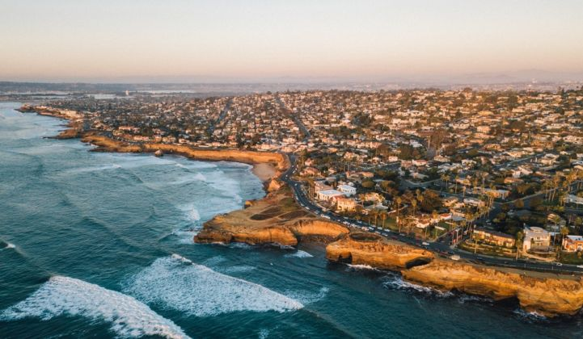

The History of San Diego
The first European to visit the region was a Spaniard named Juan Rodriguez Cabrillo. In 1542 Cabrillo led an expedition that sailed along the coast of California. So on 27 June 1542 Cabrillo set sail from La Navidad in Mexico. On 28 September 1542 Cabrillo anchored in San Diego Bay. However the story of San Diego began in 1769 when the Spanish built a chain of missions across California. Then in 1821 Mexico became independent of Spain. However in 1846 the USA annexed California.
In 1850 although San Diego only had a population of several hundred it was incorporated. San Diego slowly developed. Colorado House was built in 1851. Old Point Loma Lighthouse was built in 1855. Whaley House was built in 1856. It was the first two story brick house in California. San Diego grew rapidly in the 1860s. In 1860 San Diego was still a tiny place with a population of only 731. By 1870 it had grown to a town of 2,300. Meanwhile Balboa Park opened in 1868. Old City Hall in San Diego was built in 1874. Then in the 1880s San Diego boomed. Meanwhile in the late 19th century a number of famous buildings were built in San Diego. Llewelyn building was erected in 1887. Also in 1887 Villa Montezuma was built. Yuma Building was constructed in 1888. Louis Bank of Commerce was also built in 1888.
In the early 20th century San Diego became a major US naval base. However on 21 July 1905 a boiler explosion on board the USS Bennington while it was at San Diego killed 66 men and injured many others. Nevertheless because of the navy San Diego suffered less in the depression of the 1930s than most of the USA. Meanwhile in 1915 San Diego held the Panama-California Exposition. In 1936 the California-Pacific International Exposition was held there. In the early 20th century the population of San Diego boomed. In 1900 the population of San Diego was less than 18,000. By 1940 it had risen to 203,000. In the second half of the 20th century San Diego continued to flourish. Its population rose to 696,000 in 1970. Meanwhile the Maritime Museum was founded in 1948 and a new Public Library was built in San Diego in 1954. Sea World opened in 1964. The Timken Museum of Art opened in 1965. The San Diego-Coronado Bay Bridge opened in 1969. San Diego continued to prosper in the late 20th century. Plaza Bonita opened in 1983. Horton Plaza opened in 1984. San Diego Convention Center was built in 1989.
In the 21st century San Diego continued to thrive. Its main industries are defense and tourism. In 2017 the population of San Diego was 1.4 million. San Diego is the second largest city in California.
List the top 5 things you want to do in San Diego.
If you lost your list, click below to restore your previous priorities.
Is there a restaurant you want to try that isn't recommended?
Name:Type of Food:
What others have recommended:
Click below to see the top 20 places to eat in San Diego (increments of 5)
San Diego Hidden Gems
There is so much to see and do in San Diego. The most popular places are the famous San Diego Zoo, Balboa Park, SeaWorld, and of course the miles of sandy beaches with great surf. However, there are also many hidden gems. Click below to see my top hidden gem recommendation!